Amendment #178 (S.O. 6(E), 1986)
20 changes: 0 to the First Schedule, 20 to the Second Schedule. 17 applied3 not applied
What it did to the ministries
- grewMinistry of Health and Family Welfare grows from 75 to 90 subjects change 3, 4 · histories: Health and Family Welfare
- grewMinistry of Information and Broadcasting grows from 25 to 31 subjects change 7 · histories: Information & Broadcasting
- grewMinistry of Textiles grows from 22 to 48 subjects change 9 · histories: Textiles
- grewMinistry of Water Resources grows from 11 to 32 subjects change 14 · histories: Jal Shakti
The order, page by page
Page 1 of 12
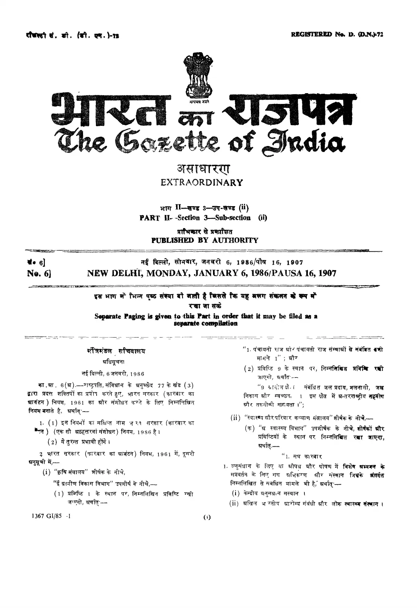
Page 2 of 12
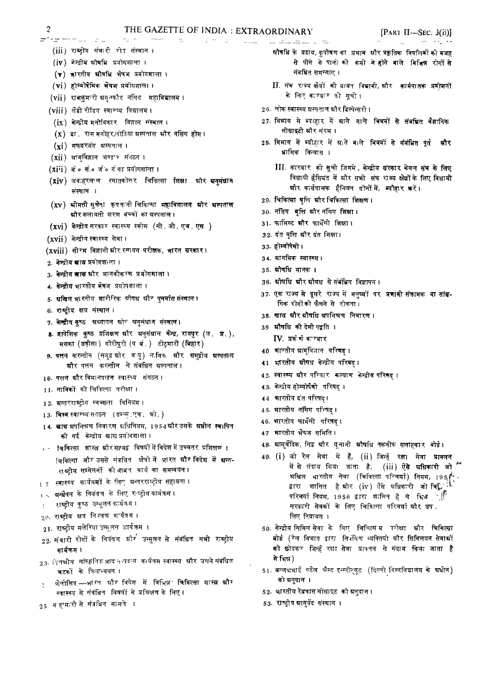
Page 3 of 12
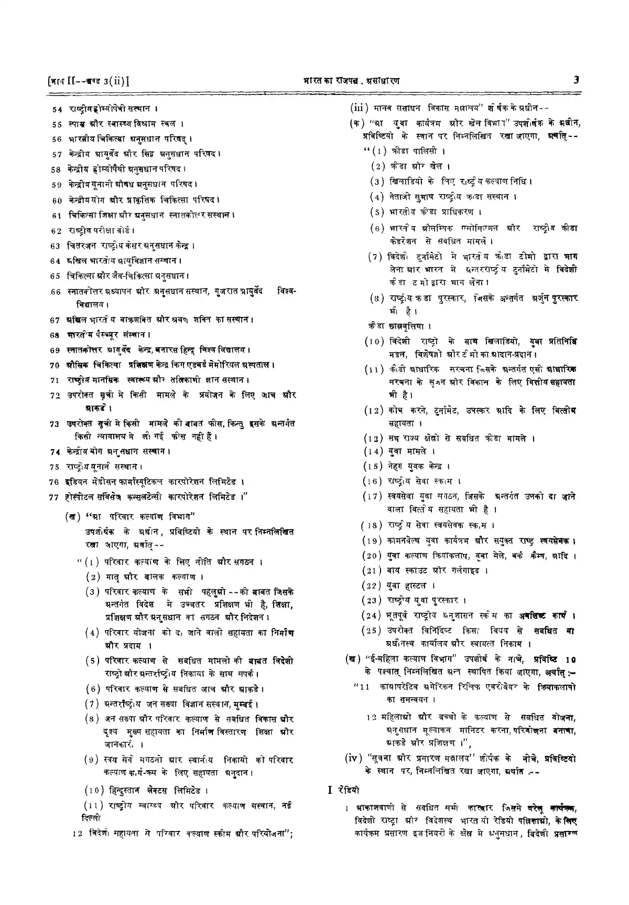
Page 4 of 12
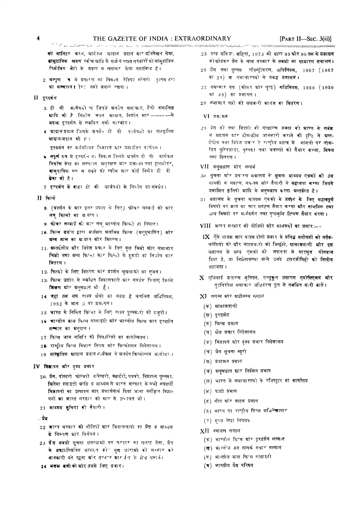
Page 5 of 12
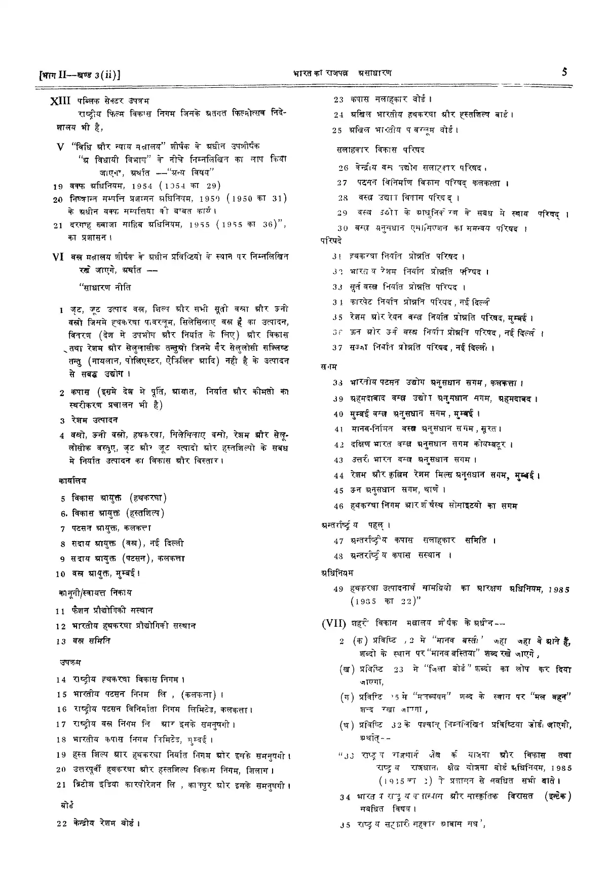
Page 6 of 12
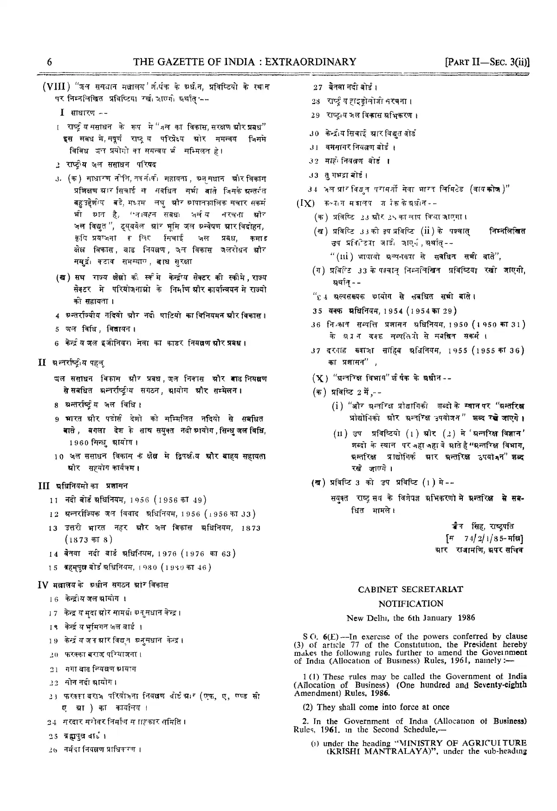
Page 7 of 12
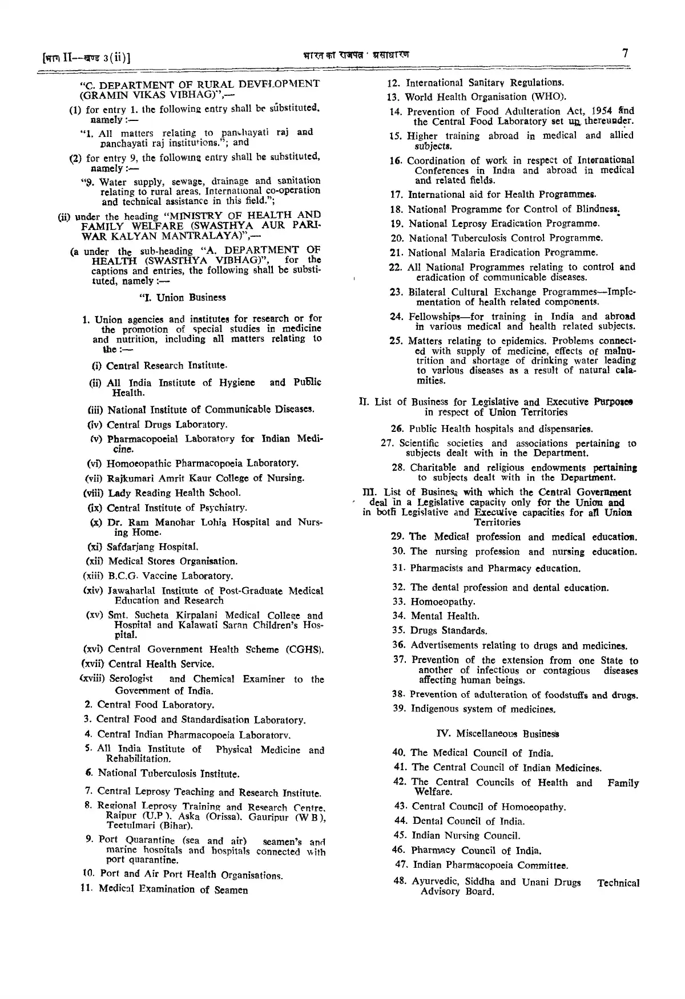
123Schedule 2 › MINISTRY OF AGRICUI TURE › DEPARTMENT OF RURAL DEVFLOPMENT › entry 1
- 1. All matters relating to panchayati raj and panchayati raj institutions.
applied at schedule 2 › ministry MINISTRY OF AGRICULTURE › department C › entry 1 in the Rules after #178
states inferred loose
Schedule 2 › MINISTRY OF AGRICUI TURE › DEPARTMENT OF RURAL DEVFLOPMENT › entry 9
- 9. Water supply, sewage, drainage and sanitation relating to rural areas. International co-operation and technical assistance in this field.
applied at schedule 2 › ministry MINISTRY OF AGRICULTURE › department C › entry 9 in the Rules after #178
states inferred loose
Schedule 2 › MINISTRY OF HEALTH AND FAMILY WELFARE › DEPARTMENT OF HEALTH
- I. Union Business
- 1. Union agencies and institutes for research or for the promotion of special studies in medicine and nutrition, including all matters relating to the:
- i. Central Research Institute.
- ii. All India Institute of Hygiene and Public Health.
- iii. National Institute of Communicable Diseases.
- iv. Central Drugs Laboratory.
and 91 more
- v. Pharmacopoeial Laboratory for Indian Medicine.
- vi. Homoeopathic Pharmacopoeia Laboratory.
- vii. Rajkumari Amrit Kaur College of Nursing. (viii) Lady Reading Health School.
- ix. Central Institute of Psychiatry.
- x. Dr. Ram Manohar Lohia Hospital and Nursing Home.
- xi. Safdarjang Hospital.
- xii. Medical Stores Organisation. (xiii) B.C.G. Vaccine Laboratory.
- xiv. Jawaharlal Institute of Post-Graduate Medical Education and Research
- xv. Smt. Sucheta Kirpalani Medical College and Hospital and Kalawati Saran Children's Hospital.
- xvi. Central Government Health Scheme (CGHS). (xvii) Central Health Service. (xviii) Serologist and Chemical Examiner to the Government of India.
- 2. Central Food Laboratory.
- 3. Central Food and Standardisation Laboratory.
- 4. Central Indian Pharmacopoeia Laboratory
- 5. All India Institute of Physical Medicine and Rehabilitation.
- 6. National Tuberculosis Institute.
- 7. Central Leprosy Teaching and Research Institute.
- 8. Regional Leprosy Training and Research Centre Raipur (U.P), Aska (Orissa), Gauripur (WB) Teetulmari (Bihar).
- 9. Port Quarantine (sea and air) seamen's and marine hospitals and hospitals connected with port quarantine.
- 10. Port and Air Port Health Organisations.
- 11. Medical Examination of Seamen
- 12. International Sanitary Regulations.
- 13. World Health Organisation (WHO).
- 14. Prevention of Food Adulteration Act, 1954 and the Central Food Laboratory set up thereunder.
- 15. Higher training abroad in medical and allied subjects.
- 16. Coordination of work in respect of International Conferences in India and abroad in medical and related fields.
- 17. International aid for Health Programmes.
- 18. National Programme for Control of Blindness.
- 19. National Leprosy Eradication Programme.
- 20. National Tuberculosis Control Programme.
- 21. National Malaria Eradication Programme.
- 22. All National Programmes relating to control and eradication of communicable diseases.
- 23. Bilateral Cultural Exchange Programmes-Implementation of health related components.
- 24. Fellowships-for training in India and abroad in various medical and health related subjects.
- 25. Matters relating to epidemics. Problems connected with supply of medicine, effects of malnutrition and shortage of drinking water leading to various diseases as a result of natural calamities.
- II. List of Business for Legislative and Executive PurposeO in respect of Union Territories
- 26. Public Health hospitals and dispensaries.
- 27. Scientific societies and associations pertaining to subjects dealt with in the Department.
- 28. Charitable and religious endowments pertaining to subjects dealt with in the Department.
- III. List of Business with which the Central Government deal in a Legislative capacity only for the Union and in both Legislative and Executive capacities for all Union Territories
- 29. The Medical profession and medical education.
- 30. The nursing profession and nursing education.
- 31. Pharmacists and Pharmacy education.
- 32. The dental profession and dental education.
- 33. Homoeopathy.
- 34. Mental Health.
- 35. Drugs Standards.
- 36. Advertisements relating to drugs and medicines.
- 37. Prevention of the extension from one State to another of infectious or contagious diseases affecting human beings.
- 38. Prevention of adulteration of foodstuffs and drugs.
- 39. Indigenous system of medicines.
- IV. Miscellaneous Business
- 40. The Medical Council of India.
- 41. The Central Council of Indian Medicines.
- 42. The Central Councils of Health and Family Welfare.
- 43. Central Council of Homoeopathy.
- 44. Dental Council of India.
- 45. Indian Nursing Council.
- 46. Pharmacy Council of India.
- 47. Indian Pharmacopoeia Committee.
- 48. Ayurvedic, Siddha and Unani Drugs Technical Advisory Board.
- 49. Concession of medical attendance and treatment for Central Government servants other than:
- i. those in Railway Service (1) those paid from Defence Services Fstimates (iii) officers governed by the All India Services (Medical Attendance) Rules, 1954 and (iv) officers governed by the Medical Attendance Rulos
- 1956.
- 50. Medical Examination and Medical Boards for Central Civil Services [other than those controlled by the Department of Railways (Ral Vibhag) and those paid from Defence Services Estimates excepting Civilians Services).
- 51. Grants to Vallabhabhai Patel Chest Institute (under Delhi University).
- 52. Grants to Indian Red Cross Society.
- 53. National Institute of Ayurveda.
- 54. National Institute of Homoeopathy.
- 55. Spas and Health resorts.
- 56. The Indian Council of Medical Research
- 57. Central Council of Research in Ayurveda and Siddha.
- 58. Central Council of Research in Homoeopathy.
- 59. Central Council of Research in Unani Medicine.
- 60. Central Council of Research in Yoga and Naturapathy.
- 61. Post-Graduate Institute for Medical Education and Research.
- 62. National Board of Examination.
- 63. Chittaranjan Nationl Cancer Research Centre.
- 64. All India Institute of Medical Sciences.
- 65. Medical & Bio-medical Research.
- 66. Institute of Post-Graduate Teaching and Research Gujarat Ayurveda University.
- 67. All India Institute of Speech and Heating.
- 68. Pasteur Institute of India.
- 69. Post-Graduate Centre for Ayurveda, Banaras Hindu University.
- 70. Physiotherapy Training Centre, King Edward Memorial Hospital.
- 71. National Institute of Mental Health and Neuro Sciences.
- 72. Inquiries and statistics for the purpose of any of the matters in the above list.
- 73. Fees in respect of any of the matters in the above list, but not including fees taken in any Court.
- 74. Central Research Institute for Yoga.
- 75. National Institute of Unani.
- 76. Indian Medicines Pharmaceutical Corporation Limited.
- 77. Hospital Services Consultancy Corporation Limited.
applied at schedule 2 › ministry MINISTRY OF HEALTH AND FAMILY WEL- FARE (SWASTHYA AUR PARIVAR KALYAN MANT- RALAYA) › department A in the Rules after #178
read page break
Page 8 of 12
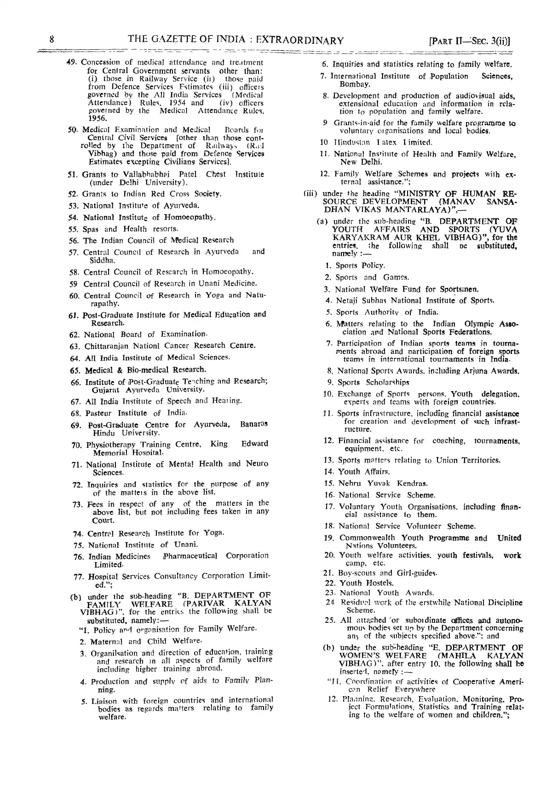
456Schedule 2 › MINISTRY OF HEALTH AND FAMILY WELFARE › DEPARTMENT OF FAMILY WELFARE
- 1. Policy and organisation for Family Welfare.
- 2. Maternal and Child Welfare.
- 3. Organilsation and direction of education, training and research in all aspects of family welfare including higher training abroad.
- 4. Production and supply of aids to Family Planning.
- 5. Liaison with foreign countries and international bodies as regards matters relating to family welfare.
- 6. Inquiries and statistics relating to family welfare.
and 6 more
- 7. International Institute of Population Sciences Bombay.
- 8. Development and production of audiovisual aids extensional education and information in relation to population and family welfare.
- 9. Grants-in-aid for the family welfare programme to voluntary organisations and local bodies.
- 10. Hindustan I atex I imited.
- 11. National Institute of Health and Family Welfare New Delhi.
- 12. Family Welfare Schemes and projects with external assistance.
applied at schedule 2 › ministry MINISTRY OF HEALTH AND FAMILY WEL- FARE (SWASTHYA AUR PARIVAR KALYAN MANT- RALAYA) › department B in the Rules after #178
Schedule 2 › MINISTRY OF HUMAN RE- SOURCE DEVELOPMENT › DEPARTMENT OF YOUTH AFFAIRS AND SPORTS
- 1. Sports Policy.
- 2. Sports and Games.
- 3. National Welfare Fund for Sportsinen.
- 4. Netaji Subhas National Institute of Sports.
- 5. Sports Authority of India.
- 6. Matters relating to the Indian Olympic Association and National Sports Federations.
and 19 more
- 7. Participation of Indian sports teams in tournaments abroad and participation of foreign sports teams in international tournaments in India.
- 8. National Sports Awards, including Arjuna Awards.
- 9. Sports Scholarships
- 10. Exchange of Sports persons, Youth delegation. experts and teams with foreign countries.
- 11. Sports infrastructure, including financial assistance for creation and development of such infrastructure.
- 12. Financial assistance for coaching, tournaments equipment, etc.
- 13. Sports matters relating to Union Territories.
- 14. Youth Affairs.
- 15. Nehru Yuvak Kendras.
- 16. National Service Scheme.
- 17. Voluntary Youth Organisations. including financial assistance to them.
- 18. National Service Volunteer Scheme.
- 19. Commonwealth Youth Programme and United Nations Volunteers.
- 20. Youth welfare activities, youth festivals, work camp, etc.
- 21. Boy-scouts and Girl-guides.
- 22. Youth Hostels.
- 23. National Youth Awards.
- 24. Residual work of the erstwhile National Discipline Scheme.
- 25. All attached or subordinate offices and autonomous bodies set up by the Department concerning any of the subjects specified above.
applied at schedule 2 › ministry MINISTRY OF HUMAN RESOURCE DEVELOP- MENT › department B in the Rules after #178
after Schedule 2 › MINISTRY OF HUMAN RE- SOURCE DEVELOPMENT › DEPARTMENT OF WOMEN'S WELFARE › entry 10
- 11. Coordination of activities of Cooperative American Relief Everywhere
- 12. Planning, Research, Evaluation, Monitoring, Project Formulations, Statistics and Training relating to the welfare of women and children.
applied at schedule 2 › ministry MINISTRY OF HUMAN RESOURCE DEVELOP- MENT › department E › entry 11 in the Rules after #178
Page 9 of 12
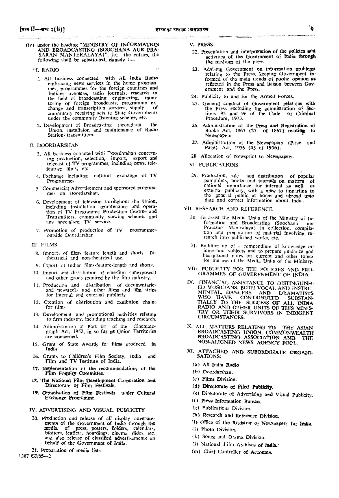
7Schedule 2 › MINISTRY OF INFORMATION AND BROADCASTING
- I. RADIO
- 1. All business connected with All India Radio embracing news services in the home programmes, programmes for the foreign countries and Indians overseas, radio journals, research in the field of broadcasting engineering, monitoring of foreign broadcasts, programme exchange and transcription services,…
- 2. Development of Broadcasting throughout the Union, installaion and maintenance of Radio Stations transmitters.
- II. DOORDARSHAN
- 3. All business connected with "oordarshan concerning production, selection, import, export and telecast of TV programmes, including news, telefeature films, etc.
- 4. Exchange including cultural exchange of TV Programmes.
and 51 more
- 5. Commercial Advertisement and sponsored programmes on Doordarshan.
- 6. Development of televsion throughout the Union including installation, maintenance and operation of TV Programme Production Centres and Transmitters, community viewing scheme. and any specialsed TV service.
- 7. Promotion of production of TV programmes outside Doordarshan III FILMS
- 8. Import of films feature length and shorts for theatrical and non-theatrical use.
- 9. Export of Indian films-feature-length and shorts.
- 10. Import and distribution of cine-film (unexposed) and other goods required by the film industry.
- 11. Production and distribution of documentaries and newsreel, and other films and film strips for internal and external publicity
- 12. Creation of aistribution and exnibition chains for films
- 13. Development and promotional activities relating to firm industry, including teaching and research.
- 14. Administration of Part DI of the Cinematograph Act, 1952, in so far as Union Territories are concerned.
- 15. Grant of State Awards for films produced in India.
- 16. Grants to Children's Film Society, India and Film and TV Institute of India.
- 17. Implementation of the recommendations of the Film Enquiry Committee.
- 18. The National Film Development Corporation and Directorate of Film Festivals.
- 19. Organisation of Film Festivals under Cultural Exchange Programme.
- IV. ADVERTISING AND VISUAL PUBLICITY
- 20. Production and release of all display advertisements of the Government of India through the media of press, posters, folders, calendars blotters, leaflets, hoardings, cinema slides, etc. and also release of classified advertisements on behalf of the Government of India.
- 21. Preparation of media lists.
- V. PRESS
- 22. Presentation and interpretation of the policies and activities of the Government of India through the medium of the press.
- 23. Advising Government on information problems relating to the Press, keeping Government informed of the main trends of puolic opinion as reflected in the Press and liaison between Government and the Press. I
- 24. Publicity to and for the Armed Forces.
- 25. General conduct of Government relations with the Press excluding the admnistration of Sections 95 and 96 of the Code of Criminal Procedure, 1973.
- 26. Administration of the Press and Registration of Books Act, 1867 (25 of 1867) relating to Newspapers.
- 27. Administration of the Newspapers (Price and Page) Act, 1956 (45 of 1956).
- 28. Allocation of Newsprint to Newspapers. VI PUBLICATIONS
- 29. Production, sale and distribution of popular pamphlets, books and journals on matters of national importance for internal as well as external publicity, with a view to imparting to the general public at home and abroad upto date and correct information about India.
- VII. RESEARCH AND REFERENCE
- 30. To assist the Media Units of the Ministry of Information and Broadcasting (Soochana aur Prasaran Mantralaya) in collection, compilation and preparation of material involving research into published works, etc.
- 31. Building up of a compendium of knowledge on important subjects and to prepare guidance and background notes on current and other topics for the use of the Media Units of the Ministry.
- VIII. PUBLICITY FOR THE POLICIES AND PRO- GRAMMES OF GOVERFNMENT OF INDIA
- IX. FINANCIAL ASSISTANCE TO DISTINGUISH- ED MUSICIANS, BOTH VOCAL AND INSTRU- MENTAL, DANCERS AND DRAMATISTS WHO HAVE CONTRIBUTFD SUBSTAN- TIALLY TO THE SUCCESS OF ALL INDIA RADIO AND OTHER UNITS OF THIS MINIS- TRY OR THEIR SURVIVORS IN INDIGENT CIRCUMSTANCES.
- X. ALL MATTERS RELATING TO THE ASIAN BROADCASTING UNION, COMMONWEALTH BROADCASTING ASSOCIATION AND THE NON-ALIGNED NEWS AGENCY POOL.
- XI. ATTACHED AND SUBORDINATE ORGANE SATIONS:
- a. All India Radio
- b. Doordarshan.
- c. Films Division.
- d. Directorate of Filed Publicity.
- e. Directorate of Advertising and Visual Publicity.
- f. Press Information Bureau.
- g. Publications Division.
- h. Research and Reference Division.
- i. Office of the Registrar of Newspapers for India.
- j. Photo Division. (L) Songs and Drama Division. (1) National Film Archives of India.
- m. Chief Controller of Accounts
- XII. AUTONOMOUS ORGANISATIONS
- a. Film & TV Institution of India.
- b. Indian Institution of Mass Communication.
- c. Children's Film Society, India.
- d. Press Council of India.
- XIII. PUBLIC SECTOR UNDERTAKING National Film Development Corporation including Directorate of Film Festivals.
applied at schedule 2 › ministry MINISTRY OF INFORMATION AND BROADCASTING in the Rules after #178
read page break
Page 10 of 12
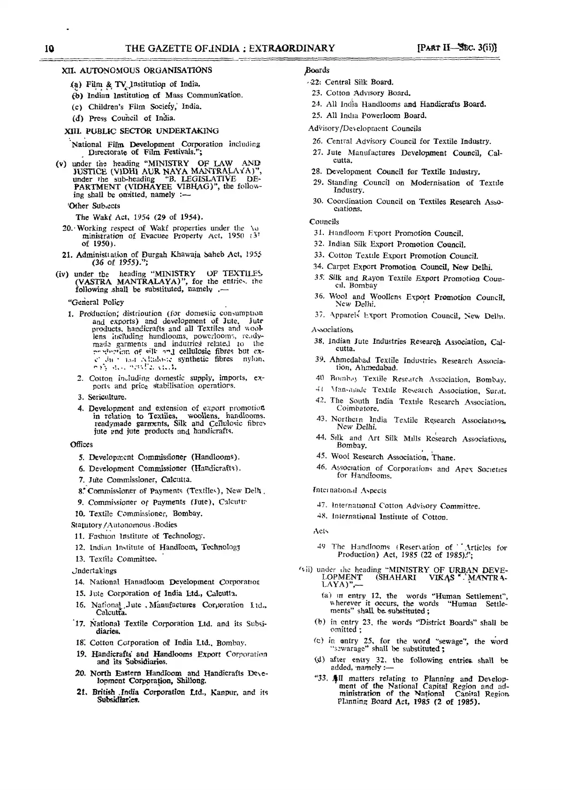
8910111213Schedule 2 › MINISTRY OF LAW AND JUSTICE › LEGISLATIVE DE- PARTMENT › Other Sub.ects; Schedule 2 › MINISTRY OF LAW AND JUSTICE › LEGISLATIVE DE- PARTMENT › entry 19; Schedule 2 › MINISTRY OF LAW AND JUSTICE › LEGISLATIVE DE- PARTMENT › entry 20; Schedule 2 › MINISTRY OF LAW AND JUSTICE › LEGISLATIVE DE- PARTMENT › entry 21
not applied (the change could not be placed in the Rules as read; see How this document was read)
Schedule 2 › MINISTRY OF TEXTILES
- General Policy
- 1. Production; distribution (for domestic consumption and exports) and development of Jute, Jute products, handicrafts and all Textiles and wook lens iucluding handlooms, powerlooms, readymade garments and indutrics related to the dration of silk and cellulosic fibres but exi tulosic synthetic fibres…
- 2. Cotton including domestic supply, imports, exports and price stabilisation operations.
- 3. Sericulture.
- 4. Development and extension of export promotion in relation to Textiles, woollens. handlooms. readymade garments, Silk and Cellulosic fibres jute and jute products and handicrafts. Offices
- 5. Development Commissioner (Handlooms).
and 43 more
- 6. Development Commissioner (Handicrafts).
- 7. Jute Commissioner, Calcutta.
- 8. Commissioner of Payments (Textiles), New Delk.
- 9. Commissioner of Payments (Jute), Calcutta
- 10. Textile Commissioner, Bombay. Statutory/Autonomous Bodies
- 11. Fashion Institute of Technology.
- 12. Indian Institute of Handloom, Technology
- 13. Textile Committee. Undertakings
- 14. National Hanadloom Development Corporation
- 15. Jute Corporation of India Ltd., Calcutta.
- 16. National + Jute Manufactures Corporation Ltd. Calcutta.
- 17. National Textile Corporation Ltd. and its Subsidiaries.
- 18. Cotton Corporation of India Ltd., Bombay.
- 19. Handicrafts and Handlooms Export Corporation and its Subsidiaries.
- 20. North Eastern Handloom and Handicrafts Development Corporation, Shillong.
- 21. British India Corporation Ltd., Kanpur, and its Subsidiaries. Boards 22: Central Silk Board.
- 23. Cotton Advisory Board.
- 24. All India Handlooms and Handicrafts Board.
- 25. All India Powerloom Board. Advisory/Development Councils
- 26. Central Advisory Council for Textile Industry.
- 27. Jute Manufactures Development Council, Calcutta.
- 28. Development Council for Textile Industry.
- 29. Standing Council on Modernisation of Textile Industry.
- 30. Coordination Council on Textiles Research Associations. Councils
- 31. Handloom Export Promotion Council.
- 32. Indian Silk Export Promotion Council.
- 33. Cotton Textile Export Promotion Council.
- 34. Carpet Export Promotion Council, New Delhi.
- 35. Silk and Rayon Textile Export Promotion Council. Bombay
- 36. Wool and Woollens Export Promotion Council New Delhi.
- 37. Apparels Export Promotion Council, New Delhi. Associations
- 38. Indian Jute Industries Research Association, Calcutta.
- 39. Ahmedabad Textile Industries Research Association, Ahmedabad.
- 40. Bombay Textile Research Association, Bombay.
- 41. Man-made Textile Research Association, Surat.
- 42. The South India Textile Research Association Coimbatore.
- 43. Northern India Textile Research Associations New Delhi.
- 44. Silk and Art Silk Mills Research Associations Bombay. 5
- 45. Wool Research Association, Thane.
- 46. Association of Corporations and Apex Societies for Handlooms. International Aspects
- 47. International Cotton Advisory Committee.
- 48. International Institute of Cotton. Acts
- 49. The Handlooms (Reservation of Articles for Production) Act, 1985 (22 of 1985).
applied at schedule 2 › ministry MINISTRY OF TEXTILES in the Rules after #178
read page break
Schedule 2 › MINISTRY OF URBAN DEVE- LOPMENT › entry 12
for “Human Settlement” read “Human Settle- ments”
applied at schedule 2 › ministry MINISTRY OF URBAN DEVELOPMENT › entry 12 in the Rules after #178
Schedule 2 › MINISTRY OF URBAN DEVE- LOPMENT › entry 23
for “District Boards” read “”
applied at schedule 2 › ministry MINISTRY OF URBAN DEVELOPMENT › entry 23 in the Rules after #178
Schedule 2 › MINISTRY OF URBAN DEVE- LOPMENT › entry 25
for “sewage” read “sawarage”
applied at schedule 2 › ministry MINISTRY OF URBAN DEVELOPMENT › entry 25 in the Rules after #178
after Schedule 2 › MINISTRY OF URBAN DEVE- LOPMENT › entry 32
- 33. All matters relating to Planning and Development of the National Capital Region and administration of the National Capital Region Planning Board Act, 1985 (2 of 1985).
- 34. Matters relating to the Indian National Trust for Art and Cultural Heritage (INTACH).
- 35. National Cooperative Housing Federation.
applied at schedule 2 › ministry MINISTRY OF URBAN DEVELOPMENT › entry 33 in the Rules after #178
read page break
Page 11 of 12
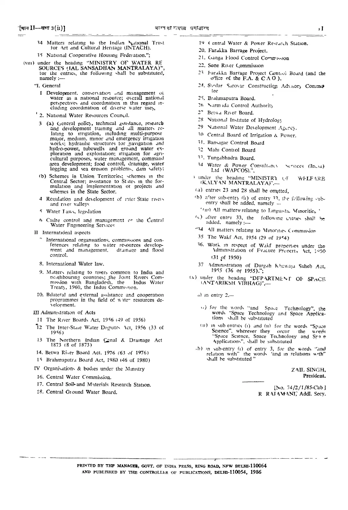
14151617181920Schedule 2 › MINISTRY OF WATER RE SOURCES
- I. General 1 Development. conservation and management of water as a national resource; overall national perspectives and coordination in this regard including coordination of diverse water useş
- 2. National Water Resources Council.
- 3.
- a. General policy, technical assistance, research and development training and all matters relating to irrigation, including multi-purpose major, medium, minor and emergency irrigation works; hydraulic structures for navigation and hydro-power, tubewells and ground water exploration and exploitation;…
- b. Schemes in Union Territories; schemes in the Central Sector; assistance to States in the formulation and implementation of projects and schemes in the State Sector.
- 4. Regulation and development of inter State rivers and river valleys
and 29 more
- 5. Water I aws, legislation
- 6. Cadre control and management or the Central Water Fngineering Services II International aspects International organisations, commissions and conferences relating to water resources development and management. drainage and flood control.
- 8. International Water law.
- 9. Matters relating to rivers common to India and neighbouring countries; the Joint Rivers Commission with Bangladesh. the Indus Water Treaty, 1960, the Indus Commission.
- 10. Bilateral and external assistance and cooperation programmes in the field of water resources development. III Administration of Acts
- 11. The River Boards Act, 1956 149 of 1956)
- 12. The Inter-State Water Disputes Act, 1956 (33 of 1956)
- 13. The Northern Indian Canal & Drainage Act 1873 (8 of 1873)
- 14. Betwa River Board Act, 1976 (63 of 1976)
- 15. Brahmaputra Board Act, 1980) (46 of 1980) IV Organisations & bodies under the Ministry
- 16. Central Water Commission.
- 17. Central Soil- and Materials Research Station.
- 18. Central Ground Water Board. PRINTED BY THF MANAGER, GOVT. OF INDIA AND PUBLISHED BY THE CONTROLLER OF
- 19. (entral Water & Power Research Station.
- 20. Farakka Barrage Project.
- 21. Ganga Flood Control Commission
- 22. Sone River Commission
- 23. Farakka Barrage Project Control Board (and the office of the F.A. & CAO).
- 24. Sardar Sarovar Construction Advisory Comm lee
- 25. Brahmaputra Board.
- 26. Narmida Control Authority
- 27. Betwa River Board.
- 28. National Institute of Hydrology
- 29. National Water Development Agercy.
- 30. Central Board of Irrigation & Power.
- 31. Bansagar Control Board
- 32. Mahi Control Board
- 33. Tungabhadra Board.
- 34. Water & Power Consultancy Services (IBL) Ltd (WAPCOS). under the heading "MINISTRY OF WELFARE (KALYAN MANTRALAYA)
applied at schedule 2 › ministry MINISTRY OF WATER RESOURCES in the Rules after #178
read page break
Schedule 2 › MINISTRY OF WELFARE › entry 23; Schedule 2 › MINISTRY OF WELFARE › entry 28
applied at schedule 2 › ministry MINISTRY OF WELFARE › part IV › entry 23 in the Rules after #178
after Schedule 2 › MINISTRY OF WELFARE › entry 33 › item i
- * All matters relating to Linguistic Minorities
not applied (the change could not be placed in the Rules as read; see How this document was read)
after Schedule 2 › MINISTRY OF WELFARE › entry 33
- 34 All matters relating to Minorities Commission 35 The Wakf Act, 1954 (29 of 1954)
- 36. Work in respect of Wakf properties under the Administration of Fvacuee Property Act, 1950 (31 of 1950)
- 37. Administration of Durgah Khowaja Saheb Act 1955 (36 of 1955).
applied at schedule 2 › ministry MINISTRY OF WELFARE › part IV › entry 36 in the Rules after #178
Schedule 2 › DEPARTMENT OF SPACE › entry 2
for “and Space Technology” read “Space Technology and Space Applica- tions”
applied at schedule 2 › ministry DEPARTMENT OF SPACE › entry 2 in the Rules after #178
Schedule 2 › DEPARTMENT OF SPACE › entry 2 › item 1; Schedule 2 › DEPARTMENT OF SPACE › entry 2 › item 11
for “Space Science” read “Space Science, Space Technology and Srea e Applications”
not applied (the change could not be placed in the Rules as read; see How this document was read)
Schedule 2 › DEPARTMENT OF SPACE › entry 3 › item i
for “and relation with” read “and in relations with”
applied at schedule 2 › ministry DEPARTMENT OF SPACE › entry 3 › item i in the Rules after #178
Page 12 of 12
How this document was read
Edits to the reading
| Date | By | Edit | Before → after |
|---|---|---|---|
| 11 November 2026 | mukundesh | word corrected | |
| 14 November 2026 | mukundesh | word removed | |
| 14 November 2026 | mukundesh | word corrected |
Changes placed by an inference rule
| Change | Rule | Status | What |
|---|---|---|---|
| 1 | loose | accepted | change 1: ministry MINISTRY OF AGRICUI TURE taken for ministry MINISTRY OF AGRICULTURE, named loosely |
| 1 | loose | accepted | change 1: department DEPARTMENT OF RURAL DEVFLOPMENT taken for department DEPARTMENT OF RURAL DEVELOPMENT, named loosely |
| 2 | loose | accepted | change 2: ministry MINISTRY OF AGRICUI TURE taken for ministry MINISTRY OF AGRICULTURE, named loosely |
| 2 | loose | accepted | change 2: department DEPARTMENT OF RURAL DEVFLOPMENT taken for department DEPARTMENT OF RURAL DEVELOPMENT, named loosely |
Known issues
| Change | Issue | Known as |
|---|---|---|
| 8 | change 8: no group_heading Other Sub.ects under schedule 2 › ministry MINISTRY OF LAW AND JUSTICE › department B | Group headings |
| 16 | change 16: no item i under schedule 2 › ministry MINISTRY OF WELFARE › part IV › entry 33 | Items |
| 19 | change 19: no item 11 under schedule 2 › ministry DEPARTMENT OF SPACE › entry 2 | Items |
From the Government of India (Allocation of Business) Rules, 1961 and their amendments, as published by the Cabinet Secretariat (cabsec.gov.in), read by orgpedia. The readings of the older scanned gazettes have known gaps.